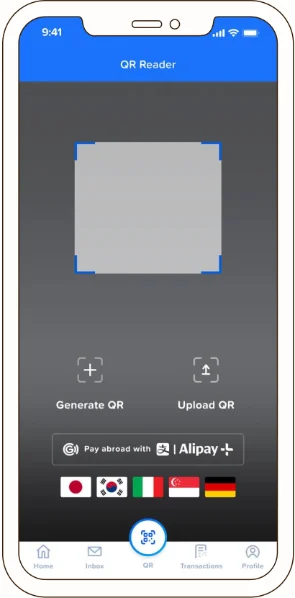
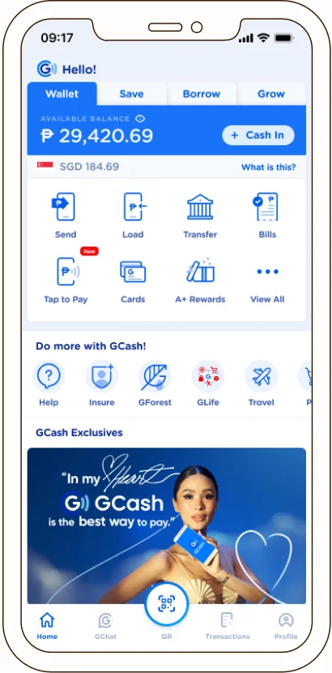

GCash Global
Redesigned the GCash Global Payments experience, driving overseas usage from 5% to 80%+

GCash had a working global-payments product, but less than 5% of travelling users touched it. The problem wasn't the product, it was the experience. It was buried inside the app, offered no real-time exchange rates, and gave users no reason to trust it over cash.
My job was to redesign this, turning a feature into something travellers would actually reach for. The challenge: make users feel financially in control the moment they land in a foreign country, before they even reach a cashier.
previous experience
What was not working?
Poor visibility
The feature was buried four taps deep, and 70% of GCash users who'd travelled overseas had never even heard of it. The live Alipay+ partnership covered 50+ countries, but most of GCash's own users didn't know it existed.
Unclear designs
Even users who found the feature didn't know what to do with it. No in-app instructions, no store locator, no way to tell which merchants accepted it, just a link to a help-center article. This friction killed user adoption right at the point of use.
Lack of information
Zero-fee forex was GCash's key selling point, yet users never saw the exchange rate until after they'd already paid. The app couldn't detect location either, so it showed nothing at checkout, leaving people anxious at the cashier instead of confident.
solution
Meet users before they even open the app
Discovery couldn't start inside the app. Users who didn't know the feature existed would never go looking for it. So I designed touchpoints that reached them before they even travelled.
I surfaced the top 5 destinations for Filipino travellers (Japan, Singapore, South Korea, Italy, Germany) directly inside the QR scanner, the highest-traffic screen in the app. Informative without being disruptive, so awareness builds naturally while people are just paying for everyday things at home.
The in-app experience worked alongside physical touchpoints too: geofenced push notifications near the airport, and large-format ads in the international departure terminal, reinforcing the message right at the moment people were actually about to travel.


Confidence the moment you're overseas
Once abroad, the goal was to make spending power visible at a glance. I pushed the converted balance onto the dashboard, so users see what they can actually spend in local currency the moment they open the app.
I also redesigned the QR scanner to show the live exchange rate and accepted-merchant logos at a glance, giving users the confirmation they need before reaching the cashier, not after. This turned a feature people couldn't find or trust into something they could actually rely on mid-trip.
results
of overseas-travelling users adopted it post-launch — up from under 5%, with the product infrastructure unchanged.
markets — SG, JP, FR, UK — saw measurable rises in feature awareness and transaction volume from the airport campaign.
from pitch to live product: coordinating design, product, engineering, marketing, and the Alipay+ partnership.